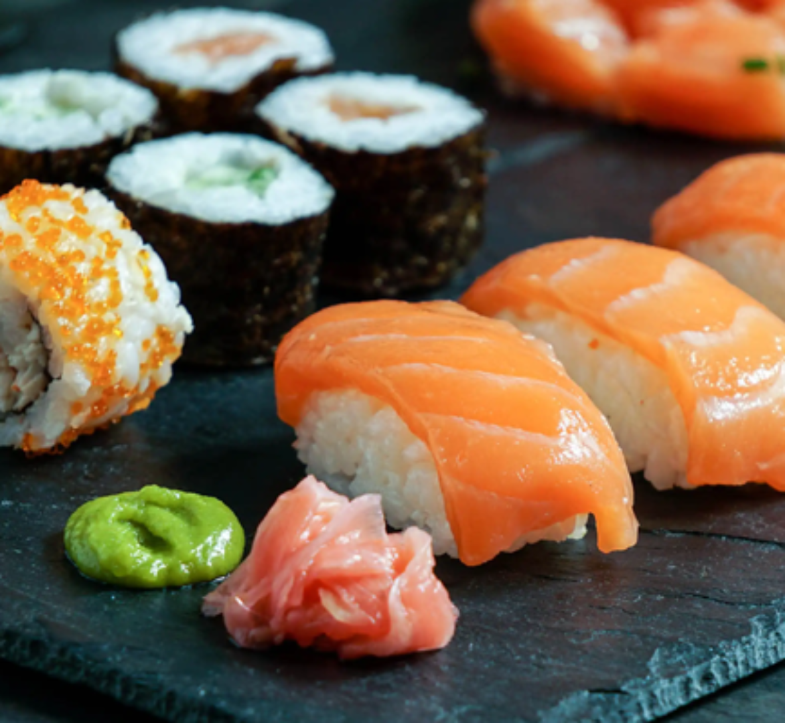

Other popular dishes

Ramen 🍜

Sushi 🍣

Japan's national dish, curry with rice (kare raisu, カレーライス), is a delightful fusion of flavors that showcases the country's unique take on a beloved international dish. Brought to Japan from India by the British during the Meiji era, Japanese curry has since evolved into a distinct and integral part of the nation's cuisine. Unlike its spicier Indian counterpart, Japanese curry is typically milder and thicker, characterised by a rich, savory gravy made from a roux of flour, fat, and curry spices. It is commonly served with chunks of tender meat, potatoes, carrots, and onions over a bed of fluffy white rice, creating a hearty and comforting meal.
Prep your vegetables. Slice the onion into 1/8 inch slices. Cut the onion in half from the stem to the root. Peel. Cut the stem end off. Now cut slices moving towards the stem end. You are cutting onion half moons. Cut up the carrots, potatoes and chicken. You want bite size pieces.
Heat a pot large enough to hold all the ingredients over medium low heat. Add 2 tablespoons of butter. Let melt and then add the onions and the salt. Cook the onions for about 5 minutes stirring occasionally. You are going for soft and translucent. You don't want to let the onions brown.
Add the carrots, garlic and ginger (or 1 tbsp of garlic ginger paste if you stock it) and cook another 2 minutes. Then add the stock. Stir and bring to a simmer. Cook 10 minutes.
Add the potatoes. Cook another 15 minutes. Check the potatoes. They should be close to done. Depends on how big the pieces were. If they aren't starting to soften cook them until they do.
Add the chicken. Cook 10 minutes. While the chicken cooks make the curry roux.
Heat the remaining 4 tablespoons of butter in a small sauce pan over medium low heat. Add the curry powder and garam masala and cook for about 30-45 seconds. Add the flour and stir to combine. You want all the flour coated with fat. If it's really dry add a bit of vegetable oil.
Cook the flour/spice mixture over medium low heat for about 2 minutes. This is your roux. Now add a couple tablespoons of broth from the simmering curry. Stir to combine. It will make an ungodly looking mess. Goop. Don't worry. Add another couple tablespoons of broth and stir. Repeat that a couple more times.
Now add around 1/2 cup of broth and stir to combine. Add another 1/2 cup or so and stir. You sould be getting to the point where you have a really thick but smooth paste.
10-12 minutes have gone by. Check the chicken. It should be done or at least close. Depends on how lively your simmer is though. Use an instant read thermometer. Safety first. You want it read around 68-71C at this point. The thighs are cooked at 76C but you can go a little higher. That's the nice thing about dark meat. It is forgiving.
Add the curry paste to the curry. Stir to combine. Bring to a simmer. The chicken should be done. Check it. If it's not cook it for another few minutes.
Taste. At this point the flavour profile will be similar to the cubes. Adjust salt. Now add one tablespoon of tonkotsu sauce. Taste again. This will add a hint of sweetness as well as that secret Japanese curry flavour. If you like it stop now. If you want more fruit and sugar add another tablespoon. I like it between one and two tablespoons. If you want big fruit taste add another tablespoon.
Calories: 418.35kcal | Carbohydrates: 35.44g | Protein: 22.14g | Fat: 22.35g | Saturated Fat: 12.11g | Cholesterol: 109.79mg | Sodium: 1536.84mg | Potassium: 1074.06mg | Fiber: 5.62g | Sugar: 6.68g | Calcium: 80.67mg | Iron: 3.59mg